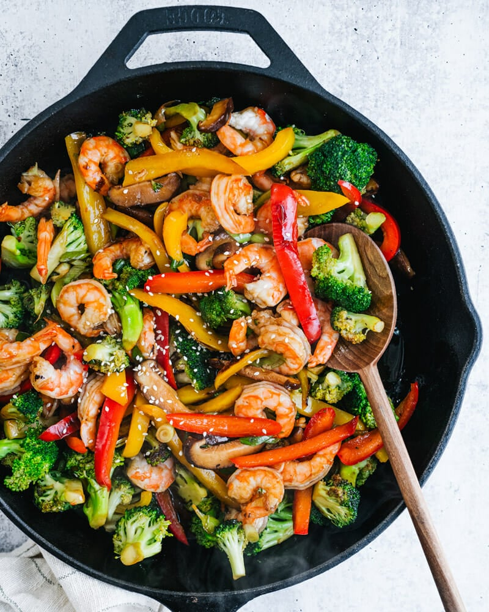

Back to Home
Shrimp Stir Fry

Shrimp stir fry
A delicious shrimp stir fry based on traditional Chinese cooking.
Ingredients
- Shrimp
- Broccoli
- Spring Onions
- Bell Pepper (or a spicier chili pepper)
- Soy Sauce
- Cooking Oil
- Oyster Sauce
- Garlic
Steps
- Mince the garlic.
- Slice the spring onions.
- Slice the bell peppers.
- Oil a hot pan, then add minced garlic.
- Add the shrimp and sear it.
- Add broccoli and bell peppers.
- Turn down the heat, then add the soy sauce and oyster sauce. Let it simmer briefly.
- Turn off the heat and top with spring onions.
- Plate and serve.